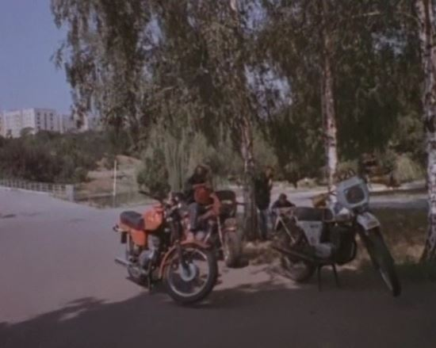
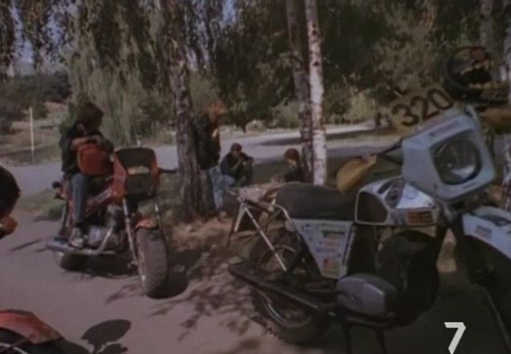
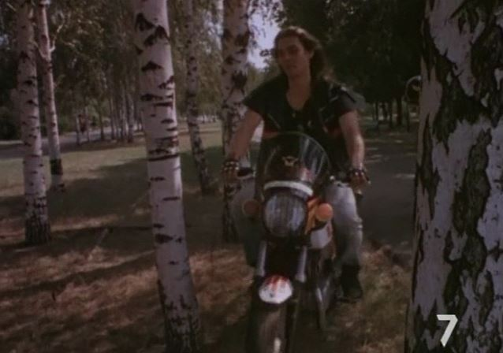
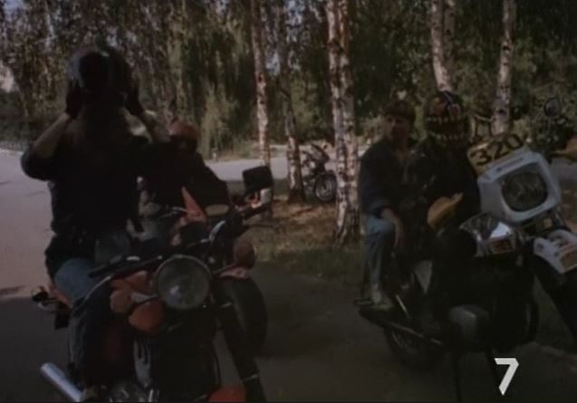
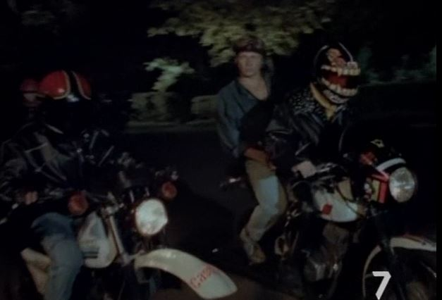
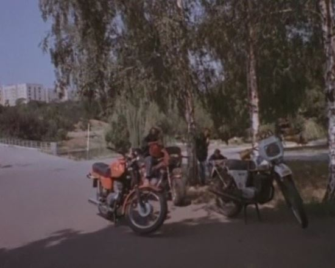
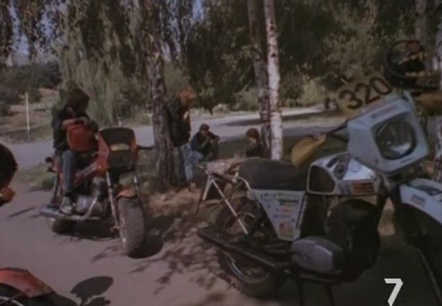
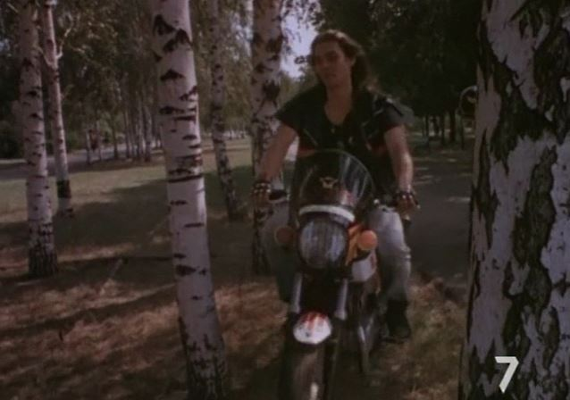
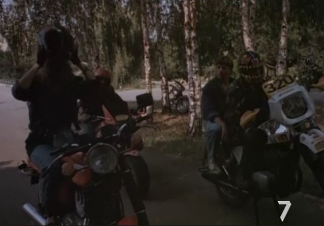
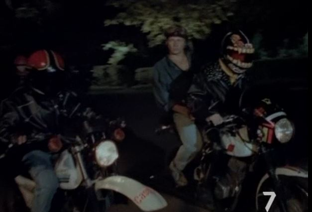
У фильме обнаружено: Ява, Чезет.
 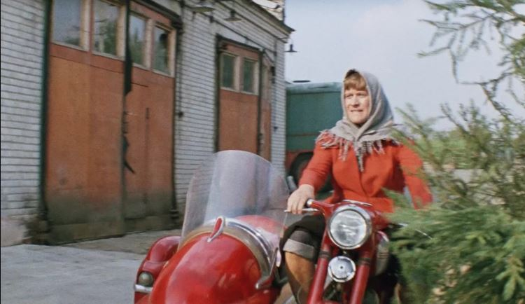
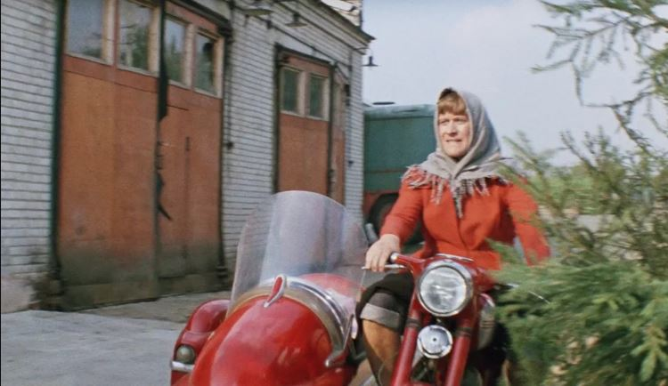
У фильме обнаружено: Ява-350 с коляской.
 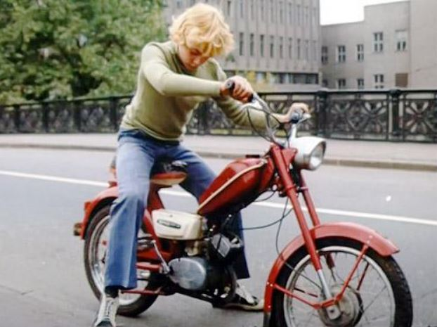
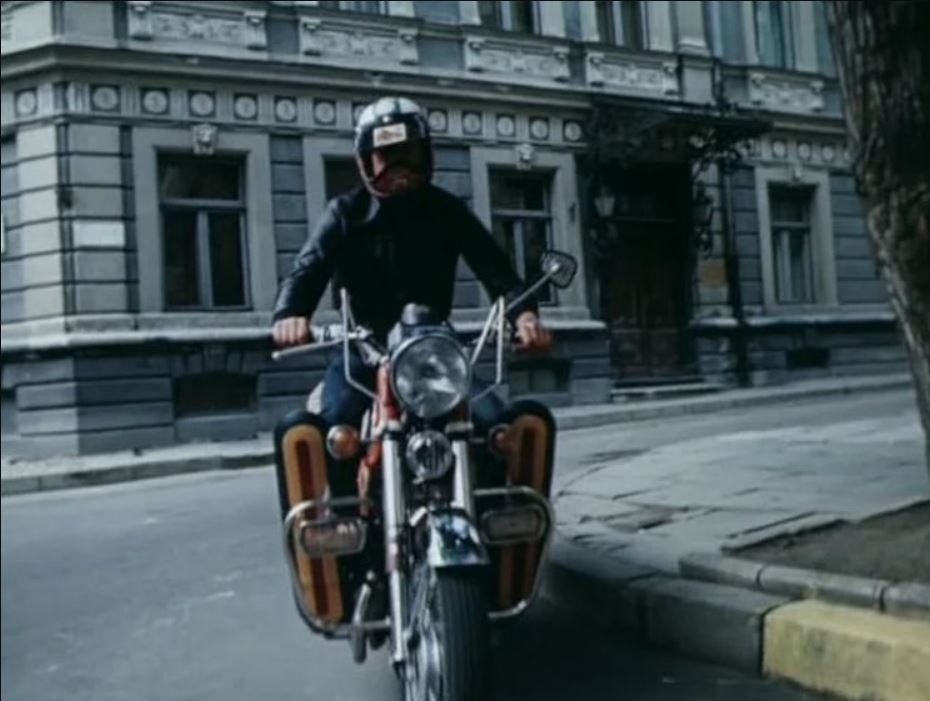
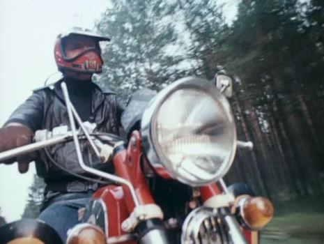
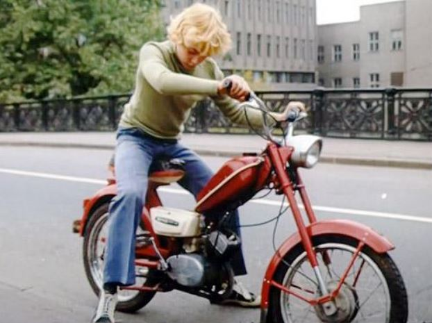
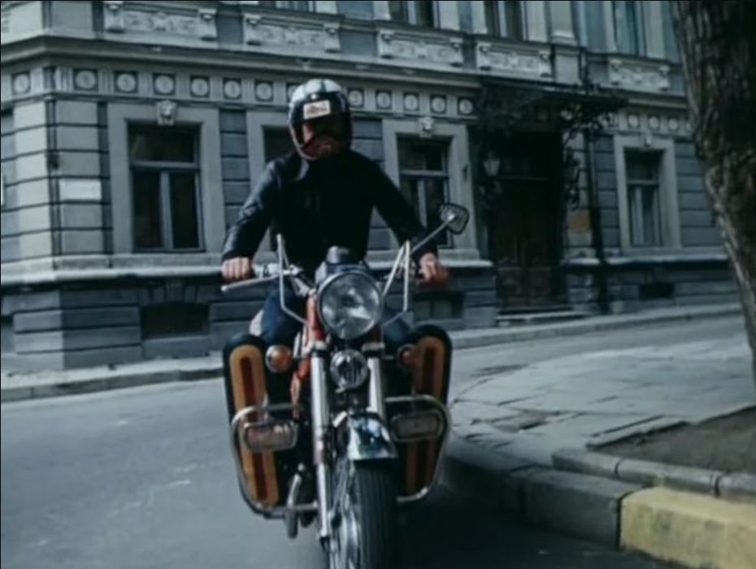
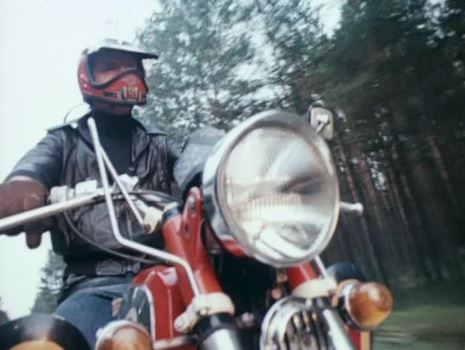
У фильме обнаружено: Ява-350/634, еще замечен мопед собран из деталей частично
от Верховины-3, частично от Верховины-4.
 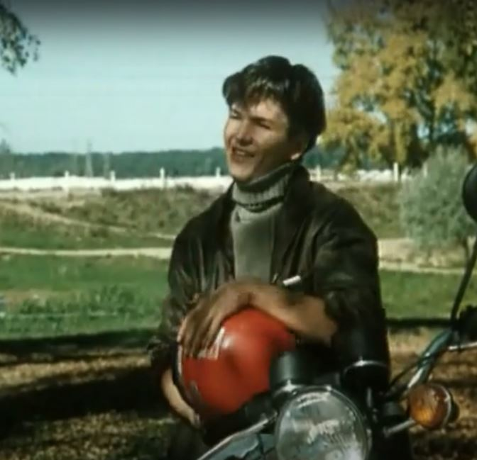
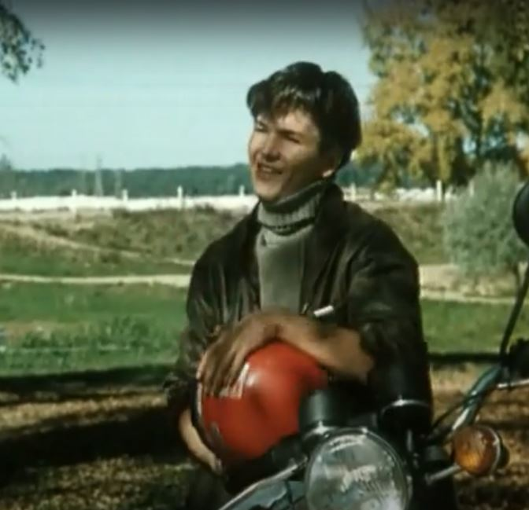

 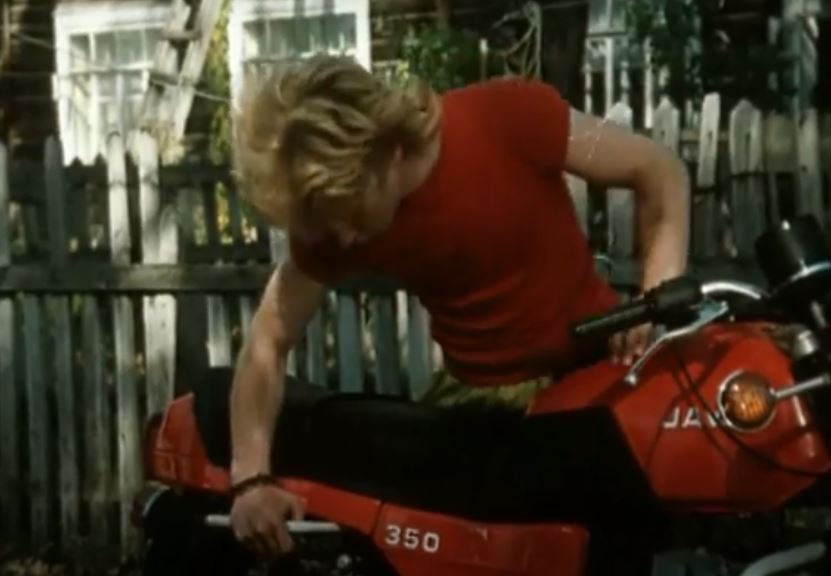
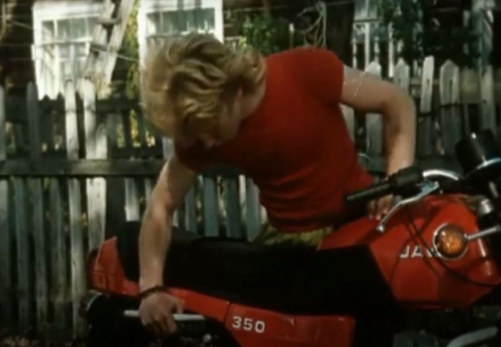